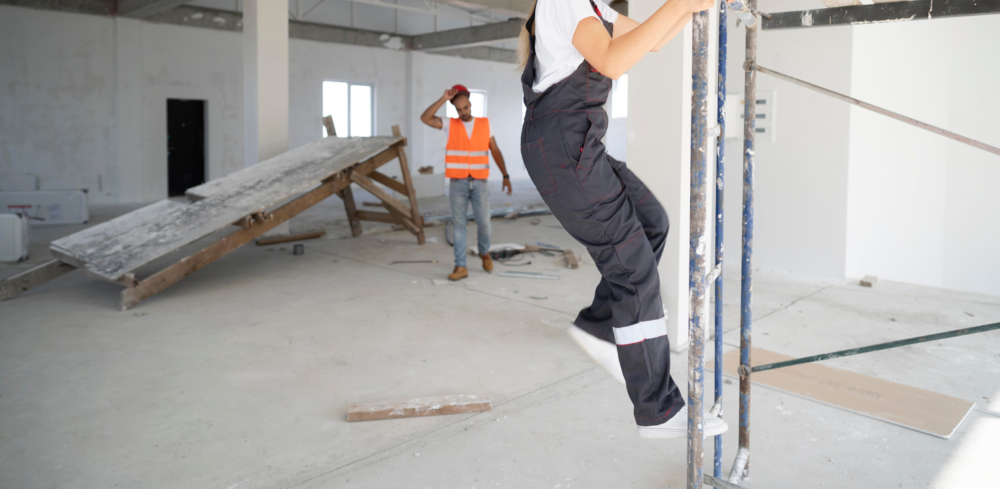

Planification des livraisons
Gestion des commandes
Prestations
Installation électrique
Installation plomberie
Installation palissade
Raccordement modules

Création base de vie
Nettoyage chantier

Aménagement des zones de stockage
Mise en place des installations provisoires
Organisation des flux de circulation
Gestion des déchets de chantier : un enjeu environnemental et économique
Tri et valorisation des déchets
Prévention et réduction des déchets